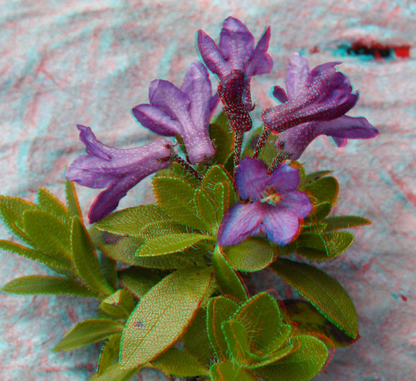

Anaglyphen
Anaglyphs have been invented by Wilhelm Rollmann in Leipzig.
This is a real stero image, converted to anaglyphs.

This is a real anaglyph image.
Color filters
Anaglyph 3D
Anaglyphenverfahren
Louis Ducos du Hauron